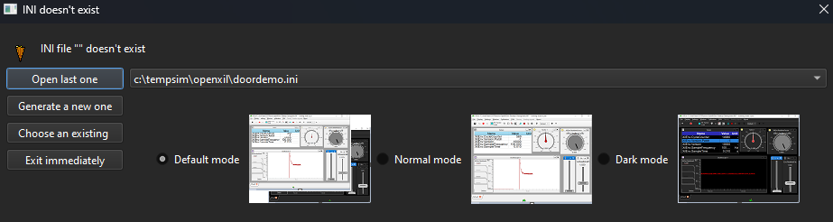

1. Setting up Simulation Environment#
Hint
Following software is required for simulating :
CARLA Simulator
OpenXilEnv
Prerequisites#
CARLA Simulator#
CARLA is an open-source simulator for autonomous driving research. It provides a highly realistic 3D environment where developers and researchers can test and train self-driving algorithms without needing a physical vehicle.
Github Repo : carla-simulator/carla-file#
License: carla-simulator/carla
Purpose: Used for driving simulation, sensor data generation, and environment modeling.
Version : >= 09.14 (used or tested for demonstration.feel free to use other versions also)
Documentation : https://carla.readthedocs.io/en/latest/start_quickstart/
OpenXilEnv#
OpenXilEnv is an environment to setup a SIL system on Windows or Linux platforms.It has configurable graphical user interface base on Qt. There exist value display/change, oscilloscope, calibration, slider, knob, etc.. for interaction.
Github Repo : eclipse-openxilenv/openxilenv
License: eclipse-openxilenv/openxilenv
Purpose: Used for testing VAPI developed functions.
Version :
Python#
version: 3.7.0
FMUs#
FMU is functional mockup Interfaces which is standard to build the binaries or files used for simulation. These following FMUs are mandatory in executing the simulation.
Carla Bridge FMU#
Carla bridge FMU contains binaries for connecting to Carla server and VAPI Instance via Openxil software. This is based on the source modelica/Reference-FMUs . Python programs have been implemented to call the respective Carla APIs . IF user has access to the carla bridge source, then there is possibility to add desired signals but with respect to Carla supported functions only. This was defined according to specifications in internal ZF Hackathon as part of SofDCar project.
Carla Bridge FMU files :
examples\auto_headlight_example\simulation_artifacts\carla_bridge_coupecar.fmuexamples\auto_headlight_example\simulation_artifacts\carla_bridge_patrolcar.fmu
Headlight Example - Any of those mentioned can be used as for headlight example both are compatible.
Door examples - As this example depends on no. of doors in the vehicle, different vehicles are implemented.
Two door variant carla_bridge_coupecar.
Four door variant carla_bridge_patrolcar.
If There are any changes required, feel free to use the source files to add the desired CARLA functionality , It is not documented as its outside the scope of VAPI.
Carla Bridge Source file location - examples\auto_headlight_example\simulation_artifacts\carla_bridge_source_files.zip
VAPI Headlight FMU#
VAPI FMU for headlight example is already described in Cmakelist and after configuration and build process, Headlight fmu package is generated and can be used for simulation.
Generated files can be found in following location : build\***cmake_preset****\examples\auto_headlamp_example\generated\fmu_AutoHeadlightFMU\fmus.
Steps to setup the simulation#
Open the terminal/CMD window.
Run following commands to set the python environment similar to below mentioned order.
set path=**insert_python_folder_path_**;%path%
set path=C:\tempsim\Python;%path%set PYVENVLIB=**insert_python_folder_path_**
set PYVENVLIB=C:\tempsim\Pythonset PYVENVEXE=**insert_python_folder_path_**python.exe
set PYVENVEXE=C:\tempsim\Python\python.exestart the carla server. by using following command.
start CarlaServer\WindowsNoEditor\CarlaUE4.exeGo to the location where OpenXilEnv executable is located and Start the OpenXilEnv executable . Arguments can be passed but optional.
.\XilEnvGui.exeAfter opening OpenXilEnv, possibility to create a new .ini file or existing one.
Hint
Arguments can be passed but optional. If there is existing .ini file to load the widgets , feel free to pass argument with respective .ini file as shown below.
.\XilEnvGui.exe -ini doordemo.iniNow the Simulation setup is ready if you have followed all the steps which are mentioned above without any issues.
You can follow next sections for executing the simulation:
Setting up widgets and configuring signals in OpenXilEnv software to the developed function. Go to chapter 2. Auto Headlight : Configure OpenXilEnv
Execute the simulation without help of scripts by manually doing each step. Go to Chapter 3. Auto Headlight : Run simulation by manual process
If you have scripts ready , then go to Chapter 4. Auto Headlight : Run Simulation with scripts